Wiki › Personagens
Personagens
Quem é quem, onde fica e o que faz.
Brasil (63)
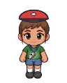
Dona Cida, a guarda-florestal🎯 Bosque do Caramelo❗2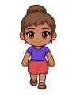
Dona Rosa, secretária da agênciaEscritório da Agência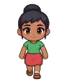
MãeSua casa❗2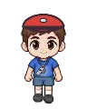
Professor Válter🎯 Campos Anexos do CT❗2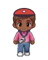
Rafa, o grafiteiro🎯 Metrô Abandonado❗2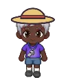
Seu Bené, o mateiro🎯 Gruta de Cristal da Tijuca❗2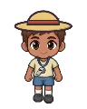
Seu Nonato, o pescador🎯 Gruta dos Caranguejos❗2Seu Paulo CésarMaracanãLisboa (6)
Madri (5)
Londres (6)
Cairo (7)
Tóquio (7)
Doha (6)
Miami (8)
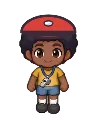
Capitã Joana, do barco🎯 Pântano dos Everglades❗2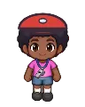
Coach Brenda, a treinadora🎯 Academia da Muscle Beach❗2Coach MartinezEstádio Rosa de MiamyMilão (6)
Munique (7)
Paris (6)
Buenos Aires (6)
Santos (6)
Atlântida (20)
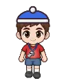
Alpinista Bruno🎯 Caverna do Yeti❗2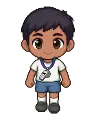
Beduíno Samir🎯 Deserto Vermelho❗2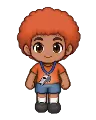
Domadora Rubi🎯 Vulcão dos Dragões❗2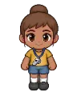
Dona Areia, a exploradora🎯 Dunas do Minhocão❗2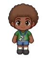
Guarda Kátia🎯 Pântano dos Jacarés❗2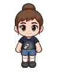
Irmã Clara🎯 Catedral das Gárgulas❗2Lanterninha Lu🎯 Gruta dos Morcegos❗2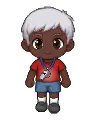
Mestre Dragonildo🎯 Covil do Dragão Ancião❗2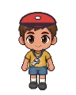
Mineiro Zé Picareta🎯 Minas das Toupeiras❗2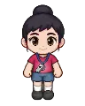
Sensei Hana🎯 Bosque dos Tanukis❗2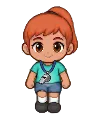
Sereia Nina🎯 Recife do Polvo❗3Seu Assombrado, o roupeiro🎯 Estádio Fantasma❗2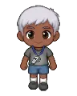
Seu Vassoura, o zelador🎯 Porão da Aranha Goleira❗2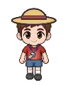
Vaqueiro Chico🎯 Arena dos Touros❗2Lua (5)
Marte (5)
Saturno (5)
Nebulosa de Órion (5)
🏆 Copa Intergaláctica (1)
🌀 Estádio do Multiverso (24)
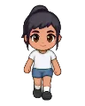
Alpinista Gigante Íris🎯 Pico do Trovão❗2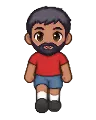
Bombeiro Tito Pé-de-Ferro🎯 Rio de Lava❗2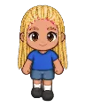
Lampianeira Gilda🎯 Grutas dos Lampiões❗2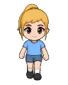
Pastora Brisa🎯 Campos de Nuvem❗2